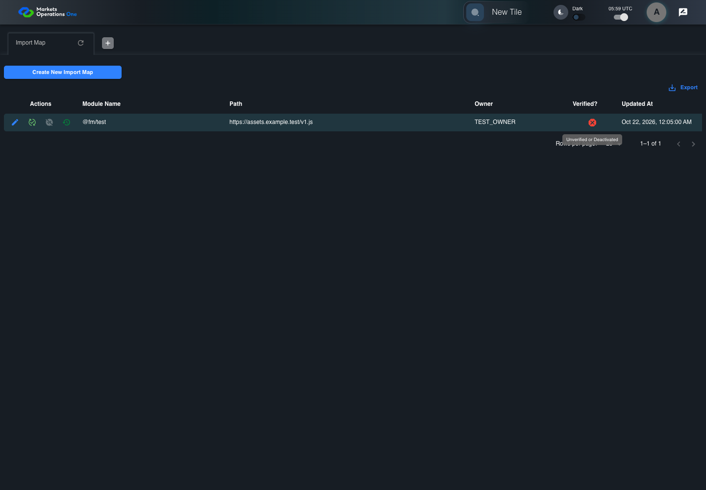

UI-ADM-MAP-011 actual administration UI with step evidence
PASS · application/run-050/ui-adm-map-011-actual-administration-ui-with-step-evidence-a37774a3e993-attempt-1 · ACTUAL_APPLICATION_LOCAL_SERVICES
Actual current React administration screens. Controlled browser login supplies UI-ADMIN-01 and TEST_OWNER, or the declared SUPER_USER. Controlled BFF routes return the case-declared records. Other controlled saves persist submitted field values. This run establishes frontend handling only. It does not execute BFF validation, storage, audit generation, or authorization.
2026-10-22T05:59:37.249Z to 2026-10-22T05:59:41.217Z
Assertions and result · Artifact manifest · Exact run inputs and source hashes
Result SHA-256:60bbd74b84ec2ada106f229cc0c072ea811a2c6faf14347579e3133ac2e737ddMachine observations
- ui-origin-admin-requests.json
e282ac940016efbed6c4d0cb19bad9d579ca617480fe5f67f0f52b5495db2e1e
Screenshot capture: CAPTURED. Named frames: 9.
Step screenshot bindings: COMPLETE. 8/8 canonical steps have execution screenshots.
Bindings measure structural coverage only. They do not establish screenshot content quality or relevance.
Screenshot content review: NOT_REVIEWED. Recorded context: 0/9 frames. Identical image bytes: 4 repeated frames. Recorded context does not establish human visual review.
Canonical step timeline
Given Admin A is authenticated as fixture UI-ADMIN-01 with the case-specific permissions
Execution: PASSED.
1. step-01 Visible state after step 1: Given Admin A is authenticated as fixture UI-ADMIN-01 with the case-specific permissions
2026-10-22T05:59:38.769Z · 1440×1000
Step: /Users/lushevol/code/github/ratan-release-impact/workbench/tasks/ui-test-coverage-20261022/test-cases.md:8474
SHA-256:e3b0f9fc19565c05531c6efe10482168b9bbf39577aa6c46d3b54491467406f9And the Import Map admin screen is open for UI-ADMIN-01; fixture record 101 is active and has Path https://assets.example.test/v1.js; its owner is TEST_OWNER; the deactivate response returns record 101 with active false
Execution: PASSED.
2. step-02 Visible state after step 2: And the Import Map admin screen is open for UI-ADMIN-01; fixture record 101 is active and has Path https://assets.example.test/v1.js; its owner is TEST_OWNER; the deactivate response returns record 101 with active false
2026-10-22T05:59:39.631Z · 1440×1000
Step: /Users/lushevol/code/github/ratan-release-impact/workbench/tasks/ui-test-coverage-20261022/test-cases.md:8475
SHA-256:70ec360942004dddbd31814e6e6fa8534d4cf4605ba58bfedf8e2b0befa3f4f6When Admin A clicks icon button named "Deactivate" inside row with Record Id "101" in the "Import Map" administration data grid
Execution: PASSED.
3. step-03 Visible state after step 3: When Admin A clicks icon button named "Deactivate" inside row with Record Id "101" in the "Import Map" administration data grid
2026-10-22T05:59:39.799Z · 1440×1000
Step: /Users/lushevol/code/github/ratan-release-impact/workbench/tasks/ui-test-coverage-20261022/test-cases.md:8476
SHA-256:2521e802270929e303fcf2e7188d56d0facae9b17ddd73dc8f033d794ff319a3And Admin A clicks button named "Deactivate" inside the dialog named "deactivate ID: 101" inside the "Import Map" administration tabpanel
Execution: PASSED.4. step-04 Visible state after step 4: And Admin A clicks button named "Deactivate" inside the dialog named "deactivate ID: 101" inside the "Import Map" administration tabpanel
2026-10-22T05:59:39.967Z · 1440×1000
Step: /Users/lushevol/code/github/ratan-release-impact/workbench/tasks/ui-test-coverage-20261022/test-cases.md:8477
SHA-256:126a74de7cdc3c520c5245cadb44b623bb978353fde3f47096a686573ec32048Then cell named "Verified?" inside row with Record Id "101" in the "Import Map" administration data grid contains the error icon with tooltip "Unverified or Deactivated"
Execution: PASSED.
5. step-05 Visible state after step 5: Then cell named "Verified?" inside row with Record Id "101" in the "Import Map" administration data grid contains the error icon with tooltip "Unverified or Deactivated"
2026-10-22T05:59:40.300Z · 1440×1000
Step: /Users/lushevol/code/github/ratan-release-impact/workbench/tasks/ui-test-coverage-20261022/test-cases.md:8478
SHA-256:6c8abeba40d7886b78e560c1baf83f834869c78e5b3185f1e3248a168c9a98cbAnd icon button named "Verify" inside row with Record Id "101" in the "Import Map" administration data grid is enabled
Execution: PASSED.
6. step-06 Visible state after step 6: And icon button named "Verify" inside row with Record Id "101" in the "Import Map" administration data grid is enabled
2026-10-22T05:59:40.396Z · 1440×1000
Step: /Users/lushevol/code/github/ratan-release-impact/workbench/tasks/ui-test-coverage-20261022/test-cases.md:8479
SHA-256:6c8abeba40d7886b78e560c1baf83f834869c78e5b3185f1e3248a168c9a98cbImage bytes match frame 5. An unchanged image can be valid for consecutive assertions. This match does not establish correct step content.
And icon button named "Deactivate" inside row with Record Id "101" in the "Import Map" administration data grid is disabled
Execution: PASSED.
7. step-07 Visible state after step 7: And icon button named "Deactivate" inside row with Record Id "101" in the "Import Map" administration data grid is disabled
2026-10-22T05:59:40.618Z · 1440×1000
Step: /Users/lushevol/code/github/ratan-release-impact/workbench/tasks/ui-test-coverage-20261022/test-cases.md:8480
SHA-256:6c8abeba40d7886b78e560c1baf83f834869c78e5b3185f1e3248a168c9a98cbImage bytes match frame 6. An unchanged image can be valid for consecutive assertions. This match does not establish correct step content.
And dialog named "deactivate ID: 101" inside the "Import Map" administration tabpanel is absent
Execution: PASSED.
8. step-08 Visible state after step 8: And dialog named "deactivate ID: 101" inside the "Import Map" administration tabpanel is absent
2026-10-22T05:59:40.690Z · 1440×1000
Step: /Users/lushevol/code/github/ratan-release-impact/workbench/tasks/ui-test-coverage-20261022/test-cases.md:8481
SHA-256:6c8abeba40d7886b78e560c1baf83f834869c78e5b3185f1e3248a168c9a98cbImage bytes match frame 7. An unchanged image can be valid for consecutive assertions. This match does not establish correct step content.
Additional named frames

The final visible state after the named test assertions.
2026-10-22T05:59:40.807Z · 1440×1000Step: Test source: /Users/lushevol/code/github/ratan-release-impact/workbench/e2e/audit-specs/admin-expanded.spec.ts:15
SHA-256:
6c8abeba40d7886b78e560c1baf83f834869c78e5b3185f1e3248a168c9a98cbImage bytes match frame 8. An unchanged image can be valid for consecutive assertions. This match does not establish correct step content.
Screenshots establish visible state only. Assertions and traces support functional claims.